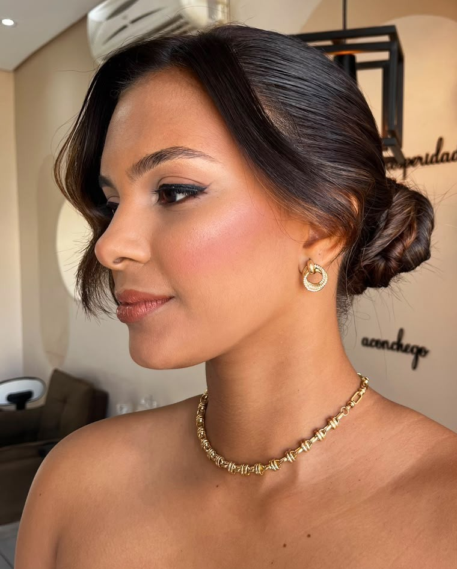
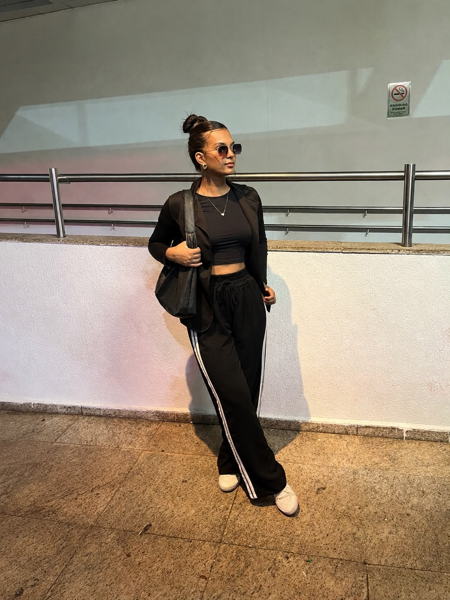
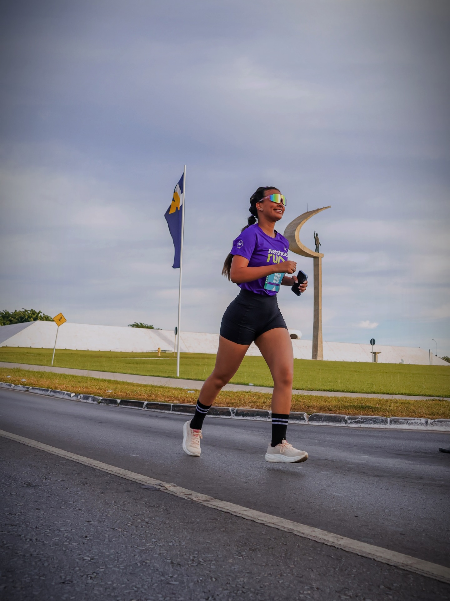
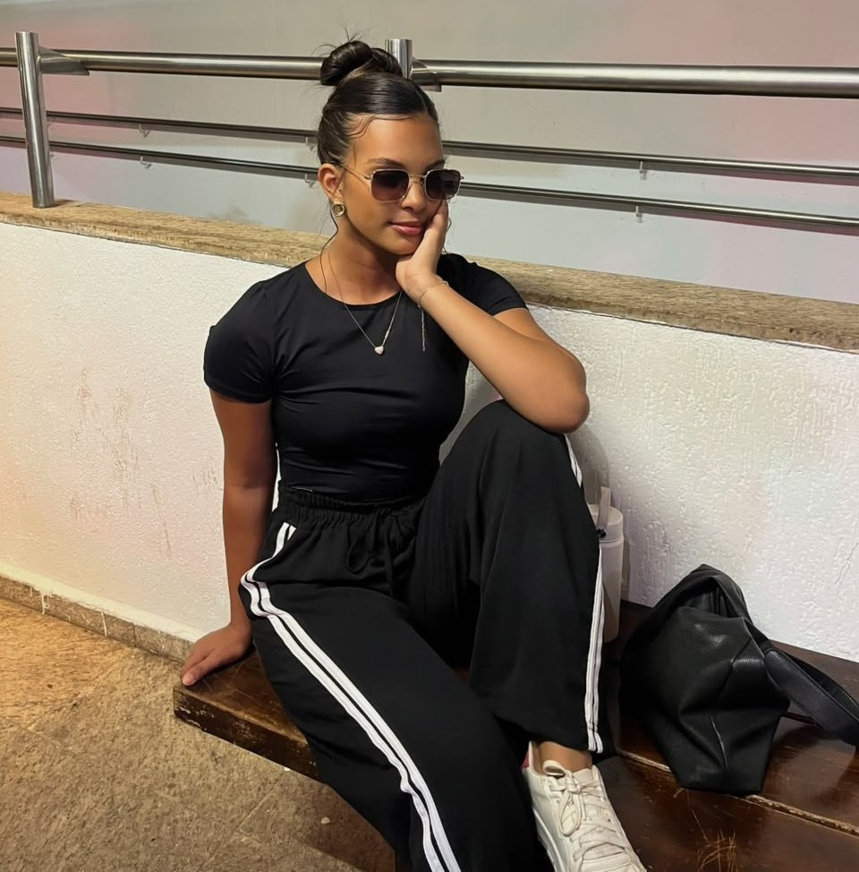
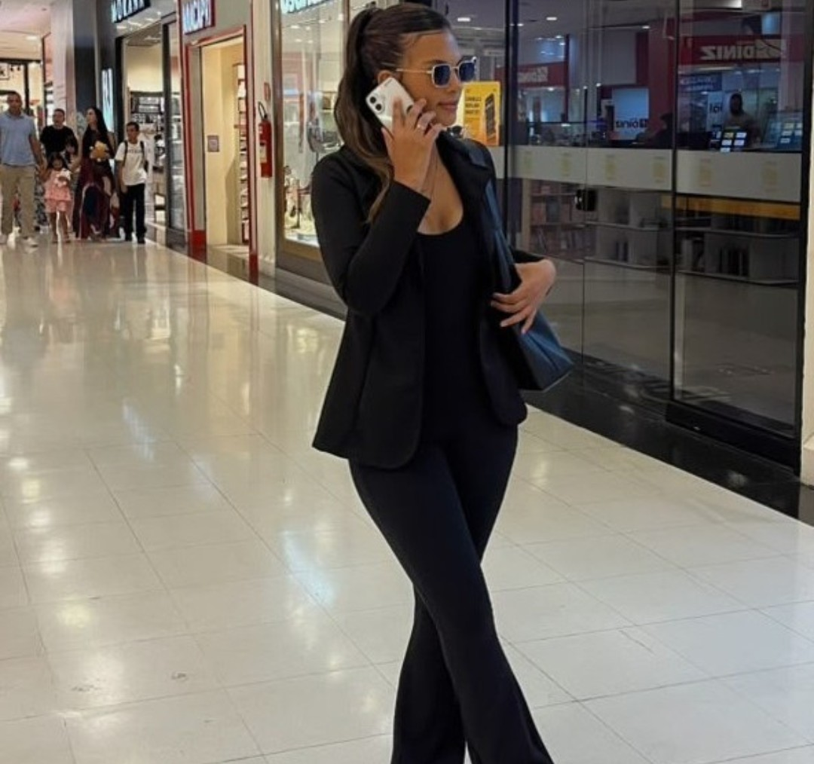
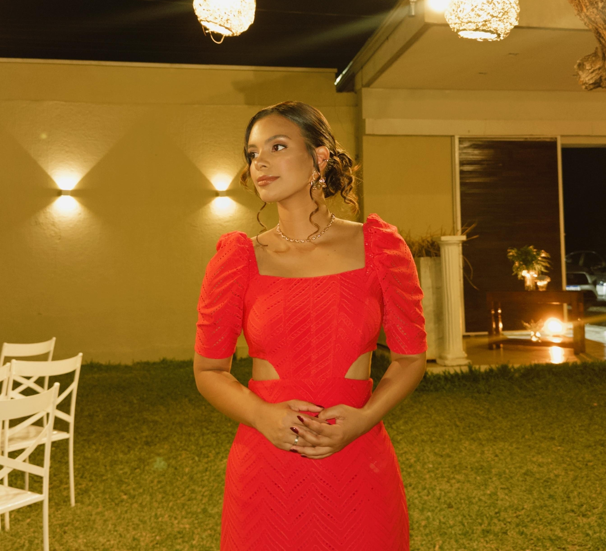

Em movimento
Treino, corrida e dia a dia do jeito que acontece. Deslize para o lado.
Oi, eu sou a Ketlin.
Crio conteúdo sobre um estilo de vida ativo e cuidadoso: treinos na academia, corridas de rua, looks do dia, eventos e momentos de autocuidado.
Quero mostrar que dá para cuidar do corpo e da mente sem abrir mão da vaidade e da leveza, e que rotina real também pode ser bonita.
Também sou estudante de Pedagogia e, hoje, trabalho em uma escola católica. Essa rotina me ensina a comunicar com clareza, paciência e cuidado, e isso aparece no jeito como eu crio conteúdo.
- Lifestyle
- Fitness
- Corrida
- Moda
- Autocuidado
Meus trabalhos
Alguns dos conteúdos que já criei, em vídeo, foto e presença em eventos.
-
Prova de looks fitness
Macaquinhos, conjuntos e peças de treino mostrados em uso, com caimento e look completo.
FormatoReels -
Treino e corrida
Rotina de academia e corrida de rua, com ritmo, energia e a evolução de cada treino.
FormatoReels e fotos -
Eventos de bem-estar
Presença em eventos e ativações, mostrando o ambiente, as marcas e a experiência.
FormatoStories e feed -
Achados e dicas
Vídeos em formato POV indicando peças e produtos que fazem sentido na rotina.
FormatoReels -
Looks do dia
Produções de moda para festas e para o dia a dia, com direção de cena e estética própria.
FormatoFeed
O que eu posto
Fitness
Treinos, rotina de academia e dicas de constância. Mostro a carga aumentando e a cabeça acompanhando.
Corrida
Treinos ao ar livre, provas de rua e a evolução de cada quilômetro, com a rotina por trás de cada prova.
Moda
Looks do dia, produções para eventos e roupas de treino em vídeo, com foco em peças que a gente usa de verdade.
Beleza e bem-estar
Skincare, autocuidado e pequenos hábitos que deixam a rotina mais leve.
Looks e momentos
Uma amostra da estética e da energia do perfil.





Quem acompanha
Um público jovem, interessado em moda, treino e rotina saudável.
- 3.608
- seguidores no Instagram
- 16 mil
- visualizadores em 90 dias
- 4 mil
- interações em 90 dias
- 54,7%
- do público é feminino
Vamos trabalhar juntas
Busco marcas que combinem com a minha rotina e com o meu público, para criar conteúdo autêntico e bem produzido.
O que posso fazer
- ReelsTreino, prova de look, review e rotina com o seu produto.
- StoriesSequências com bastidores, uso real e link direto.
- Posts e carrosséisFotos para o feed com identidade visual cuidada.
- EventosPresença e cobertura de lançamentos, ativações e provas.
- Campanhas contínuasConteúdo recorrente, com cupom e acompanhamento.
Segmentos que combinam
- Moda fitness
- Suplementos
- Tênis e acessórios de corrida
- Skincare e cosméticos
- Moda feminina
- Academias e estúdios
- Eventos de bem-estar